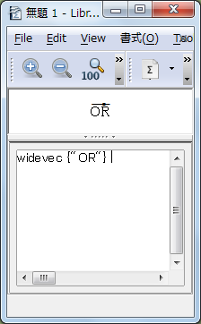

Home of site
OOoの小
枝
(Math編)
【 目次 】
1)
複数行の数式で、= で揃える
2)
数式を立体化する
3)
数式に色をつける
4)
%phi_{in} %psi^{in} として上付き、下付き添え字で "in" をつけようとすると失敗する
5)
Fe2+の２＋を上付きにする。
6)
OpenOffice.org Mathで数式を画像として保存する方法
7)
≧、≦を表示させる。(Mathの機能では無理、単語登録する。)
8)
四面体ベクトルOR
9)
片方だけの括弧を入れる
M1-1)
M1-2)
1)複数行の数式で、= で揃える
phantom 命令を用いて、
alignl (a+b)^2=(a+b)(a+b) newline
alignl phantom{(a+b)^2}=a(a+b)+b(a+b) newline
alignl phantom{(a+b)^2}=a^2+2ab+b^2
のようにすれば、等号でそろえることができます。
2)数式を立体化する
nitalic というコマンドを用いて、
abs{a} =-a (nitalic if a<0)
とすると if が立体に、
abs{a} =-a (nitalic {if a<0})
とグループ化をすれば a<0 も含めて立体にすることができます。
3)数式に色をつける
color green {1+2=3}
と打ち込むと、緑色になるようです。
色は、white, black, cyan, magenta, red, blue, green, yellowから選択できるようです。
4)%phi_{in} %psi^{in} として上付き、下付き添え字で "in" をつけようとすると失敗する
"in" の前に"%"をつけて
%phi_{%in} %psi^{%in}
とすれば上手くいきます。
これはバグではなく、inが集合要素で使用されているからだと思います。
"x in Y"は"x∈Y"
5)Fe2+の２＋を上付きにする。
Fe^{2+{}}
起こり易い間違い ⇒ 「Fe^{2+}」、Fe^2+
6)OpenOffice.org Mathで数式を画像として保存する方法
1)「Writer」を新規で起動
2)「挿入」 ⇒ 「オブジェクト」 ⇒ 「数式」
3) 数式を記し、数式Editorを閉じる。
4)「ファイル」 ⇒ 「名前をつけて保存」⇒ファイルの種類を「HTMLドキュメント」を選択 ⇒ 保存
5) 保存したfile(Html形式)とは別にgif形式file（画像file)が作成される。
7)≧、≦を表示させる。(Mathの機能では無理、単語登録する。)
IME(Google又はMS)にて単語登録を行う。

8)四面体ベクトルOR
ORの書式を変更する場合
ORを範囲選択 => menu barの「書式」 => 「フォントの種類」=>「modifiy」=>「テキスト」=>「任意の書式を選択」&「斜体にcheck」
9)片方だけの括弧を入れる
left ( x right none
と、left、rightで指定する括弧の種類に none を入れる。
M-1)
M-2)
Top of Page